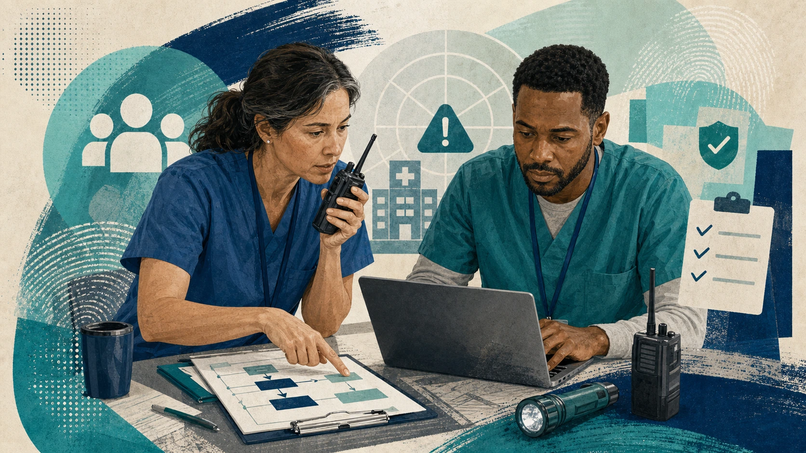

Lesson 1 · 30 minutes · Practical emergency readiness for licensed clinical providers in treatment settings
This lesson focuses on the actions clinical staff can take before, during, and after a real emergency.
Recognize the core pieces of incident command, continuity planning, emergency supplies, and drill participation.
Prioritize high-risk patients, medication continuity, rapid documentation, and clear communication during service disruption.
Activate the right plan, document decisions, notify the right partners, and turn lessons learned into better preparedness.
Disaster preparedness in clinical practice is not a separate administrative project. It is how treatment teams keep essential services moving during natural, technological, and public-health emergencies.
Patient safety: high-risk patients can destabilize quickly when medications, mobility support, or behavioral-health services are interrupted.
Team coordination: staff make better decisions when the chain of command, contact points, and quick-reference tools are already clear.
Continuity of services: prepared organizations recover faster because they document decisions, communicate changes, and improve the plan after the event.
Strong preparedness is visible before an incident because the team already knows its roles, resources, and backup workflows.
Know who leads, how decisions are routed, and where to escalate urgent safety or operations problems.
Know your role in the continuity of operations plan if space, staffing, communications, or systems are disrupted.
Know the location of emergency supplies plus evacuation, shelter-in-place, and alternate-site procedures.
Keep on-call leadership and partner contacts accessible, and use drills and checklists to reduce hesitation in the moment.
Incident command: follow the designated reporting structure so decisions stay coordinated instead of fragmented.
Continuity of operations plan: know how your role shifts if the facility loses space, staffing, power, communications, or normal clinical workflow.
Practical habit: keep quick access to emergency contacts, your escalation path, and the specific tasks your role owns during disruption.
If staff skip the plan and bypass command channels, small disruptions can become larger continuity and safety failures.
A severe storm interrupts power at your treatment center. Backup systems are starting, phones are inconsistent, and several patients need medications or mobility support within the hour.
Question 1: Who is the first internal lead or channel you should report to?
Question 2: Which continuity or emergency plan should guide your next steps?
Question 3: What task should you avoid improvising on your own if the chain of command already covers it?
Pay quick attention to medication-dependent patients, people with mobility limits, and anyone at elevated behavioral-health or safety risk.
Know what must stay available, what requires temperature control, and what backup process is used when normal systems are down.
Clarify whether the patient stays in place, moves to an alternate site, switches to telehealth, or needs transfer support.
Medication continuity: know where critical medications are, how temperature-sensitive items are protected, and who can authorize emergency workarounds.
Rapid documentation: use paper or grab-and-go tools that capture patient identity, medications, allergies, safety concerns, and destination if systems are unstable.
Simple goal: preserve enough trusted information to continue care safely even if the full system is not immediately available.
Prepared teams know which patient details must travel first when normal systems are delayed or temporarily unavailable.
Explain what changed: tell patients whether care is delayed, moved, virtual, or operating under modified procedures.
Keep the next step concrete: share where to go, who will call next, and how urgent concerns should be escalated.
Protect confidentiality: even in an emergency, use appropriate channels and share only what is needed for safety, treatment, and coordination.
Service changes are easier to tolerate when patients hear a clear plan, a safe contact path, and realistic follow-up expectations.
Smoke from a nearby wildfire closes part of the facility. You need to prioritize your first continuity actions while the team shifts to backup workflow.
Needs refrigerated medication and a same-day dose schedule.
Priority: Protect medication access and storage immediately.
Uses mobility supports and may need help moving to an alternate space.
Priority: Confirm safe movement, destination, and assistance needs.
Is distressed about a canceled visit and needs a clear follow-up path.
Priority: Communicate the new care plan and contact method quickly.
Provide the patient details needed for treatment, transfer, public-health coordination, or approved emergency operations.
Use appropriate channels, avoid casual disclosure, and limit information to what the situation actually requires.
During emergencies, follow organizational privacy guidance and applicable reporting rules while supporting urgent care and operational coordination.
Move through incident command and continuity procedures instead of treating the disruption as an isolated one-off problem.
Protect people first, contain immediate hazards, and stabilize the environment as directed.
Record what happened, who made the call, what changed in care delivery, and what information still needs follow-up.
Bring in designated leadership, external agencies, and community partners when the event crosses those thresholds.

Strong response work is organized enough that other teams can step in, continue the plan, and audit what happened later.
Water intrusion reaches a medication storage area. Phone service is unreliable, one refrigerator alarm is sounding, and staff are already moving patients away from the affected zone.
Handle the storage problem quietly first, then decide later whether leadership needs to know once the team is less busy.
Follow safety protocols, activate the right command channel, document the situation, and notify the leads who own medication, facilities, and incident coordination.
Coordinate with local emergency management when sheltering, transfer, transportation, or facility-impact decisions extend beyond normal operations.
In public-health events or community disruptions, follow the reporting and coordination path your organization uses with public-health authorities.
Use trusted community partners when patients need alternate supports, transfer coordination, or recovery-oriented services during displacement.
Capture the gaps: note supply problems, communication failures, staffing issues, and unclear responsibilities while the details are still fresh.
Update the tools: revise checklists, contacts, medication workflows, training, and continuity procedures based on the event or drill.
Close the loop: after-action review matters most when it changes the next drill, the next shift handoff, and the next real response.
The review is not just about what failed. It shows what worked, what was missing, and what should change before the next event.
During a tabletop exercise, the team found an outdated on-call contact list, confusion about where paper downtime forms were stored, and no clear backup for temperature-sensitive medications.
Update the leadership and partner contact list, confirm access, and assign an owner to keep it current.
Standardize where rapid documentation tools live and confirm staff can find them without guesswork.
Clarify refrigeration backup, monitoring, and who makes emergency continuity decisions for critical medications.
Best lesson: the improvement plan should include all three, with owners and follow-through, because each gap threatens continuity in a different way.
The incident command structure and the continuity plan.
People with the highest safety, medication, mobility, or behavioral-health continuity risk.
No. Share what the situation requires through appropriate channels and avoid unnecessary disclosure.
Turning lessons into updated checklists, contacts, supplies, training, and continuity procedures.
Preparedness training and independent-study resources for emergency management roles.
Healthcare preparedness, partnerships, and response-capability guidance.
Public-health emergency guidance, updates, and response resources.
Healthcare facility planning guidance for water disruption and operational continuity.
Emergency management standards, continuity expectations, and resiliency guidance for hospitals.
Behavioral health preparedness, response, recovery, and mitigation resources.